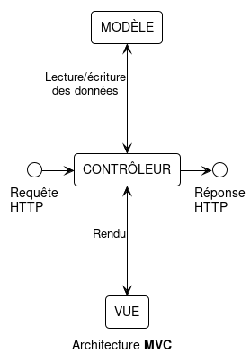
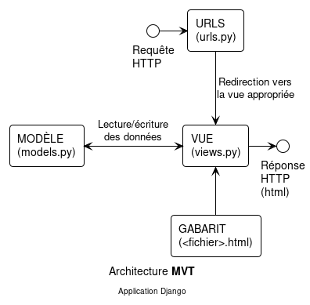
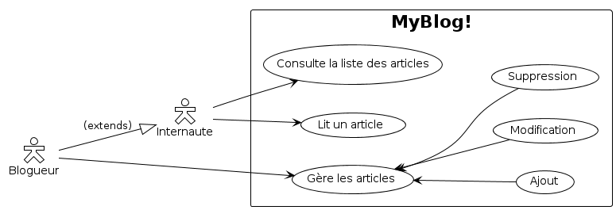
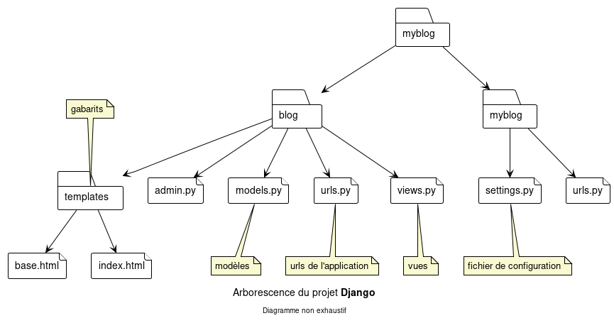
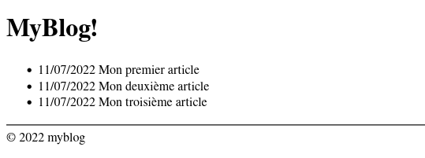
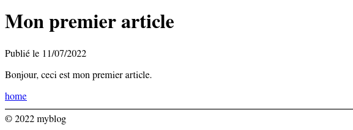
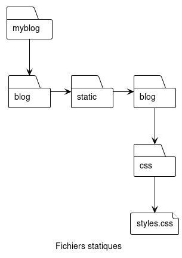
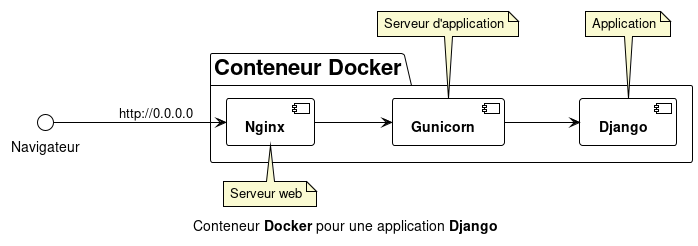

Dans cet article nous allons voir dans les grandes lignes le développement, le test et le déploiement en production dans un conteneur Docker.
Django est un web framework écrit en Python qui à l'origine fut développé entre 2003 et 2005 par une équipe spécialisée dans la création et la maintenance de sites journalistiques. En septembre 2008 la version 1.0 voit le jour et après de nombreuses améliorations et un développement actif, nous sommes aujourd'hui à la version 4.0.
MVT vs. MVC
L'architecture MVC (pour Model View Controller) est un modèle de conception qui sépare le traitement et la représentation des données :

- Le modèle constitue la structure logique et les contraintes de l'application representée par une base de données (MySQL, PostgreSQL...)
- La vue gère la représentation et l'affichage des données.
- Le contrôleur joue le rôle de pont entre les deux : il manipule les données et gère le rendu de la vue.
Django utilise l'architecture MVT (pour Model View Template) qui diffère légérement du MVC en ce sens que la partie contrôleur est directement prise en charge par le framework :

- Le modèle est semblable à celui de l'architecture MVC.
- La vue accède aux données et en gère le rendu.
- Le gabarit (ou template) est utilisé par la vue pour le rendu des données.
Remarque importante
Dans cet article, nous partons du principe que Python et Docker sont installés sous GNU/Linux.
MyBlog!
Voici l'application que nous allons créer : un simple blog

Création d'un environnement virtuel
Pour faciliter les choses, nous allons créer un environnement virtuel. Ce qui signifie que tous les modules Python dont nous aurons besoin seront uniquement installés dans l'environnement virtuel sans surcharger le système.
> python -m venv venv
> source venv/bin/activate
(venv) >La première commande lance la création de l'environnement virtuel, et la seconde l'active.
Note : la commande deactivate permet de sortir d'un environnement virtuel.
Mettons à jour pip, le gestionnaire de paquets de Python.
(venv) > pip install --upgrade pip
Requirement already satisfied: pip in ./venv/lib/python3.10/site-packages (22.0.4)
Collecting pip
Using cached pip-22.1.2-py3-none-any.whl (2.1 MB)
Installing collected packages: pip
Attempting uninstall: pip
Found existing installation: pip 22.0.4
Uninstalling pip-22.0.4:
Successfully uninstalled pip-22.0.4
Successfully installed pip-22.1.2
(venv) >Installation de Django :
Pour installer Django, il suffit d'entrer la commande suivante :
(venv) > pip install django
Collecting django
Using cached Django-4.0.6-py3-none-any.whl (8.0 MB)
Collecting sqlparse>=0.2.2
Using cached sqlparse-0.4.2-py3-none-any.whl (42 kB)
Collecting asgiref<4,>=3.4.1
Using cached asgiref-3.5.2-py3-none-any.whl (22 kB)
Installing collected packages: sqlparse, asgiref, django
Successfully installed asgiref-3.5.2 django-4.0.6 sqlparse-0.4.2
(venv) >Création du projet et de l'application
Nous devons pour commencer, créer notre projet puis notre application. Pour cela, il suffit d'entrer les commandes suivantes dans un terminal :
(venv) > django-admin startproject myblog
(venv) > cd myblog
(venv) > ./manage.py startapp blog
(venv) >L'arborescence du projet Django ressemble à ceci :

La dernière étape avant de commencer à coder consiste à modifier le fichier de configuration settings.py situé dans le répertoire myblog/ :
INSTALLED_APPS = [
'django.contrib.admin',
'django.contrib.auth',
'django.contrib.contenttypes',
'django.contrib.sessions',
'django.contrib.messages',
'django.contrib.staticfiles',
'blog', # + Ajout de notre application ici.
]# Changement de la langue de notre application...
LANGUAGE_CODE = 'fr-fr'
# ... et du fuseau horaire.
TIME_ZONE = 'Europe/Paris'Le modèle
Nous allons définir un modèle pour notre application. Un blog étant composé d'articles, nous allons créer un modèle qui représentera un article de notre blog.
Le modèle deviendra une table dans une base de données et contiendra les champs suivants :
| Champ | Description | Type |
|---|---|---|
| title | Titre de l'article | Char(100) |
| date | Date de publication | DateTime |
| text | Texte de l'article | Text |
La clef primaire sera automatiquement créée par Django et porte le nom de id.
myblog/blog/models.py
from django.db import models
class Article(models.Model):
title = models.CharField(max_length=100)
date = models.DateTimeField()
text = models.TextField()Ajout du modèle à la console d'administration (nous en verrons l'utilité plus tard):
# myblog/blog/admin.py
from django.contrib import admin
from blog.models import Article # +
admin.site.register(Article) # +La vue
Maintenant que notre modèle est défini, créons notre vue qui se chargera d'afficher tous les articles.
myblog/blog/views.py
from django.views import generic
from .models import Article
class IndexView(generic.ListView):
# Modèle utilisé pour la vue
model = Article
# Gabarit
template_name = 'blog/index.html'
# Nom de l'objet dans le gabarit
context_object_name = 'articles'Ajout de l'URL
URLs du site web : myblog/myblog/urls.py
from django.contrib import admin
from django.urls import include, path # +
urlpatterns = [
path('admin/', admin.site.urls),
# Ici on inclut le fichier qui contient les URLs
# de notre application.
path('', include('blog.urls')) # +
]URLs de l'application : myblog/blog/urls.py
from django.urls import path
from .views import IndexView
urlpatterns = [
path('', IndexView.as_view(), name='index'),
]Le gabarit (template)
myblog/blog/templates/blog/base.html
Ce fichier constitue la base de tous les autres gabarits...
<!DOCTYPE html>
<html lang="fr">
<head>
<meta charset="utf-8">
<meta name="viewport" content="width=device-width, initial-scale=1, shrink-to-fit=no">
<title>{% block title %}{% endblock %}</title> {# definition du bloc title #}
</head>
<body>
{% block body %} {# définition du block body #}
{% endblock %}
<hr>
<footer>
<span>© {% now 'Y' %} myblog</span> {# affiche l'année en cours #}
</footer>
</body>
</html>blog/templates/blog/index.html
... Et comme le suggère la première ligne ci-dessous, index.html est une extension de base.html. En d'autres termes, tout ce qui se trouve dans base.html est repris dans index.html.
{% extends 'blog/base.html' %}
{% block title %}MyBlog!{% endblock %}
{% block body %}
<h1>MyBlog!</h1>
<ul>
{% for article in articles %}
<li>{{ article.date|date:'d/m/Y' }} {{ article.title }}</li>
{% empty %}
<li>C'est vide...</li>
{% endfor %}
</ul>
{% endblock %}Migration et rendu
Maintenant que tout est prêt, il faut créer la base de données en entrant les commandes suivantes :
(venv) > ./manage.py makemigrations
(venv) > ./manage.py migrate
Operations to perform:
Apply all migrations: admin, auth, contenttypes, sessions
Running migrations:
Applying contenttypes.0001_initial... OK
Applying auth.0001_initial... OK
Applying admin.0001_initial... OK
Applying admin.0002_logentry_remove_auto_add... OK
Applying admin.0003_logentry_add_action_flag_choices... OK
Applying contenttypes.0002_remove_content_type_name... OK
Applying auth.0002_alter_permission_name_max_length... OK
Applying auth.0003_alter_user_email_max_length... OK
Applying auth.0004_alter_user_username_opts... OK
Applying auth.0005_alter_user_last_login_null... OK
Applying auth.0006_require_contenttypes_0002... OK
Applying auth.0007_alter_validators_add_error_messages... OK
Applying auth.0008_alter_user_username_max_length... OK
Applying auth.0009_alter_user_last_name_max_length... OK
Applying auth.0010_alter_group_name_max_length... OK
Applying auth.0011_update_proxy_permissions... OK
Applying auth.0012_alter_user_first_name_max_length... OK
Applying sessions.0001_initial... OK
(venv) >Note : il faudra exécuter ces commandes après la modification ou l'ajout de modèles.
Maintenant lançons le serveur Django via la ligne de commande :
(venv) > ./manage.py runserver 8080
Watching for file changes with StatReloader
Performing system checks...
System check identified no issues (0 silenced).
July 11, 2022 - 16:35:16
Django version 4.0.6, using settings 'myblog.settings'
Starting development server at http://127.0.0.1:8080/
Quit the server with CONTROL-C.Puis dans le navigateur taper localhost:8080 dans la barre d'adresse :

Ajout d'un article
(venv) > ./manage.py shell
Python 3.10.5 (main, Jun 6 2022, 18:49:26) [GCC 12.1.0] on linux
Type "help", "copyright", "credits" or "license" for more information.
(InteractiveConsole)
>>> from blog.models import Article
>>> from django.utils import timezone
>>> a = Article()
>>> a.title = 'Mon premier article'
>>> a.date = timezone.now()
>>> a.text = 'Ceci est mon premier article'
>>> a.save()
>>>Note : Il est également possible d'ajouter des articles depuis la console d'administration disponible à l'adresse : localhost:8080/admin.
Avant cela, il est nécessaire de créer un super utilisateur via la commande ./manage.py createsuperuser comme suit :
(venv) > ./manage.py createsuperuser
Nom d’utilisateur: admin
Adresse électronique: admin@myblog.com
Password:
Password (again):
Superuser created successfully.
(venv) >Il est ensuite possible de se connecter à la console d'administration à l'adresse indiquée plus haut.
Après la création de quelques articles, la page ressemble à ceci :

En l'état, nous n'avons que la liste des articles. La prochaine étape consistera donc à transformer les éléments de la liste en liens vers le contenu des articles.
Afficher un article
Nous devons tout d'abord créer une nouvelle vue et son gabarit associé, puis une URL, et pour finir, modifier le gabarit index.html afin de rendre les articles consultables.
myblog/blog/views.py
from django.views import generic
from .models import Article
class IndexView(generic.ListView):
model = Article
template_name = 'blog/index.html'
context_object_name = 'articles'
class ArticleView(generic.DetailView): # +
model = Article # +
template_name = 'blog/detail.html' # +
context_object_name = 'article' # +myblog/blog/urls.py
from django.urls import path
from .views import IndexView, ArticleView # +
urlpatterns = [
path('', IndexView.as_view(), name='index'),
path('article/<int:pk>', ArticleView.as_view(), name='detail'), # +
]myblog/blog/templates/blog/index.html
{% extends 'blog/base.html' %}
{% block title %}MyBlog!{% endblock %}
{% block body %}
<h1>MyBlog!</h1>
<ul>
{% for article in articles %}
{# On ajoute un lien ici #}
<li><a href="{% url 'detail' article.id %}">{{ article.date|date:'d/m/Y' }} {{ article.title }}</a></li>
{% empty %}
<li>C'est vide...</li>
{% endfor %}
</ul>
{% endblock %}myblog/blog/templates/blog/detail.html
{% extends 'blog/base.html' %}
{% block title %}MyBlog! {{ article.title }}{% endblock %}
{% block body %}
<h1>{{ article.title }}</h1>
<time>Publié le {{article.date|date:'d/m/Y' }}</time>
<article>
{{ article.text|safe }}
{# Le filtre safe permet le rendu de l'éventuel code html contenu dans l'article #}
</article>
<a href="{% url 'index' %}">home</a>
{% endblock %}Voici le résultat :

Et lorsque l'on clique sur le premier lien, on obtient :

Les fichiers statiques
Dans Django les fichiers statiques sont des fichiers supplémentaires dont nous avons besoin pour notre site web, par exemple des fichiers Javascript, des images ou du CSS.
Au cours du développement, ces fichiers sont stockés dans le répertoire myblog/blog/static/blog/.

Ajoutons dès à présent un peu de maquillage à notre blog.
myblog/blog/static/blog/css/styles.css
html {
font-family: Roboto, sans-serif;
background: lightcoral;
color: white;
}
hr {
border: solid pink;
}
ul {
list-style: none;
display: contents;
}
h1 {
font-size: xxx-large;
}
a {
color: whitesmoke;
text-decoration: none;
font-weight: bold;
transition: .25s ease-in-out;
}
a:hover {
color: pink;
transition: .25s;
}
time {
font-size: small;
font-style: italic;
}Chargement des fichiers statiques : myblog/blog/templates/blog/base.html
{% load static %} {# + #}
<!DOCTYPE html>
<html lang="fr">
<head>
<meta charset="utf-8">
<meta name="viewport" content="width=device-width, initial-scale=1, shrink-to-fit=no">
<link rel="stylesheet" type="text/css" href="{% static 'blog/css/styles.css' %}"> {# + #}
{# Pour faire bonne mesure ajoutons une favicon #}
<link rel="shortcut icon" type="img/x-icon" href="{% static 'blog/favicon.ico' %}">
<title>{% block title %}{% endblock %}</title>
</head>
<body>
{% block body %}
{% endblock %}
<hr>
<footer>
<span>© {% now 'Y' %} myblog</span>
</footer>
</body>
</html>Le rendu
Tout simplement magnifique !
Test de l'application en production
C'est ici que les choses sérieuses commencent !
A défaut de serveur physique, nous allons tester notre application avec Docker. Mais avant cela quelques modifications s'imposent.
Le fichier de configuration settings.py
SECRET_KEY
Lors de la création du projet Django, la commande django-admin ajoute automatiquement au fichier settings.py une clef secrète SECRET_KEY générée aléatoirement. Cette clef assure la sécurisation des données signées et doit bien évidemment être gardée secrète. Nous allons donc la stocker dans un fichier externe, appelé .env, et le module dotenv nous permettra d'importer la valeur de SECRET_KEY en tant que variable d'environnement.
Commençons par installer le module :
(venv) > pip install python-dotenv
Collecting python-dotenv
Using cached python_dotenv-0.20.0-py3-none-any.whl (17 kB)
Installing collected packages: python-dotenv
Successfully installed python-dotenv-0.20.0
(venv) >Puis dans le fichier myblog/myblog/settings.py :
# À ajouter en tête du fichier.
import os # +
from pathlib import Path
from dotenv import load_dotenv # +
# +
load_dotenv() # +
# +Ensuite modifions la variable SECRET_KEY :
SECRET_KEY = os.getenv('SECRET_KEY')Et générons une nouvelle clef :
(venv) > ./manage.py shell -c \
> 'from django.core.management import utils; \
> print(f"SECRET_KEY=\"{utils.get_random_secret_key()}\"")' > .env
(venv) > cat .env
SECRET_KEY="MySuperComplicatedAndSecureSecretKey"
(venv) >DEBUG
Par défaut, la valeur True est assignée à la variable DEBUG. Ce qui a pour effet de nous donner des informations utiles en cas d'erreur dans notre application. Cependant, en mode production ce fonctionnement n'est pas désirable. Nous allons procéder de la même façon que pour la variable SECRET_KEY en commençant par ajouter la ligne suivante à notre fichier .env :
SECRET_KEY="MySuperComplicatedAndSecureSecretKey"
DEBUG="False"Dans le fichier settings.py, modifions la varible DEBUG comme suit :
DEBUG = bool(os.getenv('DEBUG') == 'True')De cette manière si nous voulons activer le mode debug il nous suffira d'assigner la valeur "True" à la variable d'environnement DEBUG dans le fichier .env
Note : dans le cas de l'utilisation de git, ne pas oublier d'ajouter .env au fichier .gitignore.
ALLOWED_HOSTS et CSRF_TRUSTED_ORIGINS
Modifier la valeur de la variable ALLOWED_HOSTS :
ALLOWED_HOSTS = ['*']Et ajouter la variable CSRF_TRUSTED_ORIGINS, comme suit :
# Sans cela l'accès à la console d'aministration génère une exception.
CSRF_TRUSTED_ORIGINS = ['http://0.0.0.0/*'] # +Nous pourrons ainsi accéder à notre application via Docker à l'adresse http://0.0.0.0.
STATIC_ROOT
Mauvaise nouvelle, en production, Django ne sert plus automatiquement les fichiers statiques. Cette tâche sera déléguée à Nginx comme nous le verrons plus tard.
La variable STATIC_ROOT permet de définir l'emplacement où seront copiés les fichiers statiques.
STATIC_ROOT = '/app_data/static/' # +
STATIC_URL = '/static/'Docker

Docker est une plateforme permettant de lancer certaines applications dans des conteneurs logiciels. -- Source : Wikipédia

Gunicorn
Gunicorn est un serveur d'application (écrit en Python) qui sera utilisé à la place du serveur Django, ce dernier n'étant pas prévu pour être utilisé en production.
Nginx
Nginx est un logiciel de serveur Web ainsi qu'un proxy inverse (reverse proxy). C'est notamment cette fonctionnalité qui nous intéresse. Contrairement au serveur proxy qui permet à un utilisateur d'accéder au réseau Internet, le proxy inverse permet à un utilisateur d'Internet d'accéder à des serveurs internes (ici, en l'occurrence, Gunicorn).
Nginx sera également utile en tant que serveur des fichiers statiques.
Le conteneur Docker
À ce stade, nous avons donc besoin de créer :
- Un Dockerfile pour Python et ses modules (Django et Gunicorn).
- Un autre Dockerfile pour Nginx.
- Un script qui sera exécuté au lancement du conteneur.
- Et un fichier docker-compose pour coordonner le tout.
Le Dockerfile pour Python et les modules Gunicorn et Django
Pour commencer nous allons créer un fichier qui contient tous les modules Python utilisés dans notre projet.
Note : Ce fichier sera utilisé pour installer tous les modules nécessaires lors de la création du conteneur Docker.
(venv) > pip freeze > requirements.txt
(venv) > cat requirements.txt
asgiref==3.5.2
Django==4.0.6
python-dotenv==0.20.0
sqlparse==0.4.2Ensuite, ajoutons le module Gunicorn au fichier :
myblog/requirements.txt
asgiref==3.5.2
Django==4.0.6
python-dotenv==0.20.0
sqlparse==0.4.2
gunicorn==20.1.0Maintenant, créons notre fichier Dockerfile :
myblog/Dockerfile
FROM python:alpine3.16
RUN pip install --upgrade pip
COPY ./requirements.txt .
RUN pip install -r requirements.txt
COPY . /app
WORKDIR /app
ENTRYPOINT ["./entrypoint.sh"]Puis notre script entrypoint.sh :
myblog/entrypoint.sh
#! /usr/bin/env sh
set -e
./manage.py makemigrations --no-input
./manage.py migrate --no-input
./manage.py collectstatic --no-input
gunicorn myblog.wsgi:application --bind "0.0.0.0:8080"Et rendons le exécutable :
(venv) > chmod +x entrypoint.sh
(venv) >Le Dockerfile pour Nginx
Même chose pour Nginx :
myblog/nginx/Dockerfile
FROM nginx:latest
COPY ./nginx.conf /etc/nginx/conf.d/default.confEt maintenant le fichier de configuration :
myblog/nginx/nginx.conf
upstream myblog {
server myblog_django:8080;
}
server {
listen 80;
location / {
proxy_pass http://myblog;
location /static/ {
alias /app_data/static/;Le fichier docker-compose
Dernière étape, la création du fichier docker-compose :
myblog/docker-compose.yml
version: "3.8"
myblog_django:
volumes:
- static:/app_data/static
build:
context: .
ports:
- "8080:8080"
nginx:
build: ./nginx
volumes:
- static:/app_data/static
ports:
- "80:80"
depends_on:
- myblog_django
volumes:
static:L'instant de vérité
Maintenant que tout est prêt, construisons le conteneur Docker :
(venv) > docker-compose up --build
[+] Building 32.9s (17/17) FINISHED
...
⠿ Network myblog_default Created 0.3s
⠿ Container myblog-myblog_django-1 Created 1.2s
⠿ Container myblog-nginx-1 Created 0.6s
Attaching to myblog-myblog_django-1, myblog-nginx-1
myblog-myblog_django-1 | No changes detected
myblog-myblog_django-1 | Operations to perform:
myblog-myblog_django-1 | Apply all migrations: admin, auth, contenttypes, sessions
myblog-myblog_django-1 | Running migrations:
myblog-myblog_django-1 | No migrations to apply.
myblog-nginx-1 | /docker-entrypoint.sh: /docker-entrypoint.d/ is not empty, will attempt to perform configuration
myblog-nginx-1 | /docker-entrypoint.sh: Looking for shell scripts in /docker-entrypoint.d/
myblog-nginx-1 | /docker-entrypoint.sh: Launching /docker-entrypoint.d/10-listen-on-ipv6-by-default.sh
myblog-nginx-1 | 10-listen-on-ipv6-by-default.sh: info: Getting the checksum of /etc/nginx/conf.d/default.conf
myblog-nginx-1 | 10-listen-on-ipv6-by-default.sh: info: /etc/nginx/conf.d/default.conf differs from the packaged version
myblog-nginx-1 | /docker-entrypoint.sh: Launching /docker-entrypoint.d/20-envsubst-on-templates.sh
myblog-nginx-1 | /docker-entrypoint.sh: Launching /docker-entrypoint.d/30-tune-worker-processes.sh
myblog-nginx-1 | /docker-entrypoint.sh: Configuration complete; ready for start up
myblog-nginx-1 | 2022/07/13 12:12:48 [notice] 1#1: using the "epoll" event method
myblog-nginx-1 | 2022/07/13 12:12:48 [notice] 1#1: nginx/1.23.0
myblog-nginx-1 | 2022/07/13 12:12:48 [notice] 1#1: built by gcc 10.2.1 20210110 (Debian 10.2.1-6)
myblog-nginx-1 | 2022/07/13 12:12:48 [notice] 1#1: OS: Linux 5.18.10-arch1-1
myblog-nginx-1 | 2022/07/13 12:12:48 [notice] 1#1: getrlimit(RLIMIT_NOFILE): 1048576:1048576
myblog-nginx-1 | 2022/07/13 12:12:48 [notice] 1#1: start worker processes
myblog-nginx-1 | 2022/07/13 12:12:48 [notice] 1#1: start worker process 30
myblog-nginx-1 | 2022/07/13 12:12:48 [notice] 1#1: start worker process 31
myblog-nginx-1 | 2022/07/13 12:12:48 [notice] 1#1: start worker process 32
myblog-nginx-1 | 2022/07/13 12:12:48 [notice] 1#1: start worker process 33
myblog-myblog_django-1 |
myblog-myblog_django-1 | 130 static files copied to '/app_data/static'.
myblog-myblog_django-1 | [2022-07-13 12:12:49 +0000] [10] [INFO] Starting gunicorn 20.1.0
myblog-myblog_django-1 | [2022-07-13 12:12:49 +0000] [10] [INFO] Listening at: http://0.0.0.0:8080 (10)
myblog-myblog_django-1 | [2022-07-13 12:12:49 +0000] [10] [INFO] Using worker: sync
myblog-myblog_django-1 | [2022-07-13 12:12:49 +0000] [11] [INFO] Booting worker with pid: 11Enfin, tapons l'adresse : 0.0.0.0 dans le navigateur :
Et voilà le travail !
Conclusion
Nous avons vu comment créer une application simple avec Django et comment la tester dans un environnement de production.
Le principe reste le même lors du déploiement sur un serveur physique ou dans le cloud.
Indice : seul le fichier de configuration de Nginx est à modifier.
Le mot de la fin
Fini.